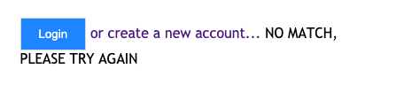
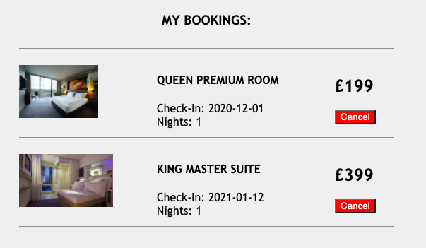
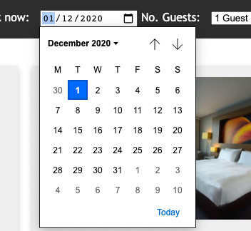
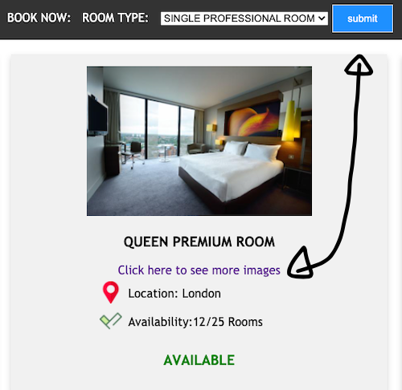
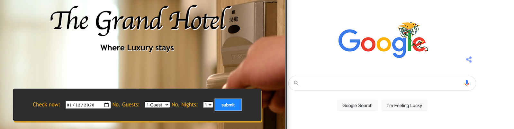
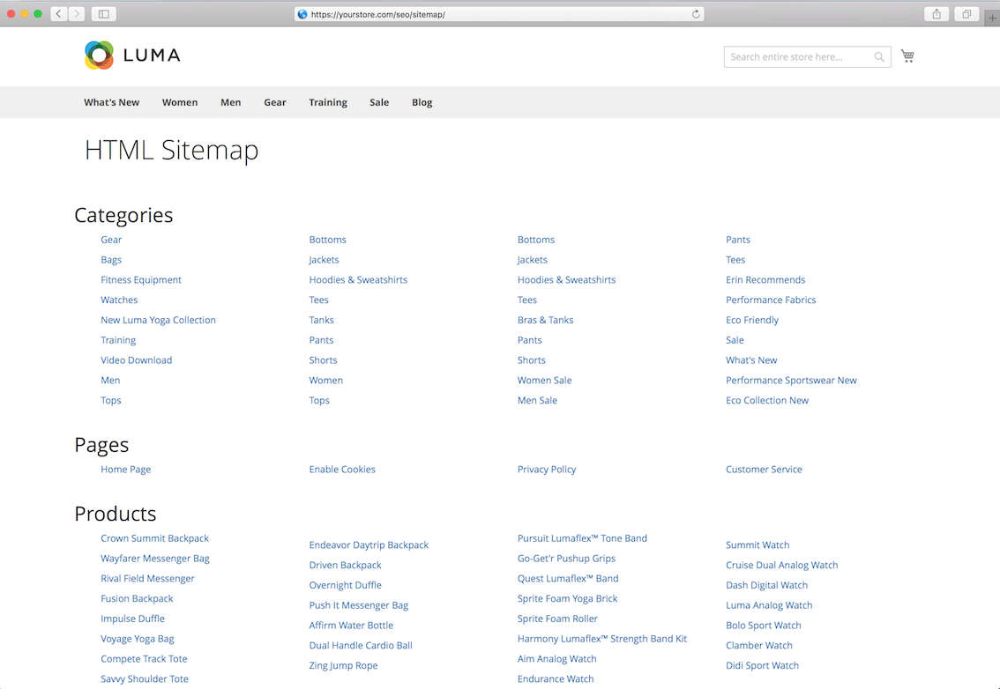

DESIGN REPORT
Throughout the development of my Ecommerce website, I ensured I followed a heuristic approach to my design and evaluated how users would interact with it. I took my design principles from the 10 usability heuristics by Jakob Nielsen which was published in 1994 (Nielsen J. ,2017).
1) Visibility of System Status:
This first principle is to ensure that users are informed of any operations in an easy manner and in a fair amount of time (Wong E. ,2019). For example, I’ve implemented a menu bar that gives the user feedback when hovered over. The colour of the item on the menu changes from black to yellow which indicates it’s a clickable link.
Another example of where I’ve implemented the first principle is when a user decides to update the database, such as creating a new account, there is a JavaScript popup message which tells the user what action is being done by the computer. As seen in the image below, when a user signs up, the following popup message appears:
2) Match between system and the real world
This second principle is to ensure that appropriate language is displayed. I’ve abided by this principle by converting all technical system prompts to a natural and non-technical message. For example, if a user attempts to log in with an account detail that does not exist, then the system will display the following message:

3) User control and Freedom
It is very common for users to perform unwanted actions by mistake. The third principle aims to address this by ensuring users can undo unwanted actions. In the case of my website, I’ve implemented this by allowing a customer to cancel their hotel booking. This is marked very clearly with a red button with the text ‘cancel’.

4) Consistency and standards
The fourth principle is to ensure that the entire website has a similar feel and layout. This will helps prevent an ‘increase in users' cognitive load’ (Nielsen J. ,2017). An example of where I’ve implemented this is by using the same search form design to search for rooms on both the home page and the search page.
5) Error Prevention
One of the biggest frustrations for users is being presented with too many errors. The fifth principle was designed to help engineers and designers to limit the number of errors by preventing these from occurring in the first place. I’ve been able to implement this by using specified input types in my html forms to prevent users from inputting incorrect formats. For example, when a user is inputting their check-in dates, the system already provides a format for the user.

6) Recognition rather than recall
This principle aims to ‘minimize the user's memory load by making objects, actions, and options visible’ (Designprinciplesftw.com,2013). I’ve been able to achieve this by using graphical user interfaces where appropriate. For example, I’ve used an icon of a shopping cart to indicate to a user that the button links to the cart's page.
7) Flexibility and efficiency of use
This principle was designed to help more experienced users execute actions more efficiently. I’ve been able to implement this principle by allowing users who already know what type of room they would like to book, to skip the viewing page and go straight to the checkout.

8) Aesthetic and minimalist design
I’ve tried to keep my website design as minimalist and as simple as possible for the end-user. For example, on the home page, there is a form box in the center which is similar to how Google's search box is in the centre of the page.

9) Help users recognize, diagnose, and recover from errors
The ninth principle is designed to help users rectify any errors. For example, if a user on my e-commerce website attempts to enter the ‘myaccount.php’ page without login in, they will be presented with a message. This message is a link to the login page and says, ‘you need to login first’.

10) Help and documentation
In an ideal world, users would love to be able to use a website and have no issues navigating their way around. Unfortunately, this is not always the case, and the tenth principle addresses this by explaining the need for documentation. I feel I have not been able to implement this principle into my website and if I could redo my website, I would add an HTML/XML map that contains links to the most popular page.
FOR EXAMPLE:
REFERENCES:
Designprinciplesftw.com. (2013). 10 Usability Heuristics for User Interface Design | Design Principles FTW. [online] Available at: https://www.designprinciplesftw.com/collections/10-usability-heuristics-for-user-interface-design.
Nielsen, J. (2017). 10 Heuristics for User Interface Design: Article by Jakob Nielsen. [online] Nielsen Norman Group. Available at: https://www.nngroup.com/articles/ten-usability-heuristics/.
Wong, E. (2019). Heuristic Evaluation: How to Conduct a Heuristic Evaluation. [online] The Interaction Design Foundation. Available at: https://www.interaction-design.org/literature/article/heuristic-evaluation-how-to-conduct-a-heuristic-evaluation.